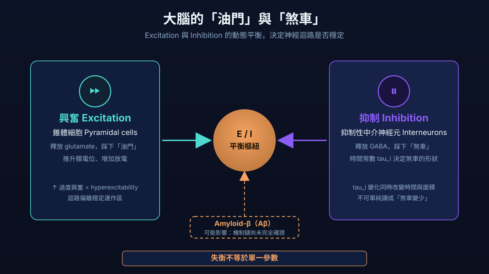
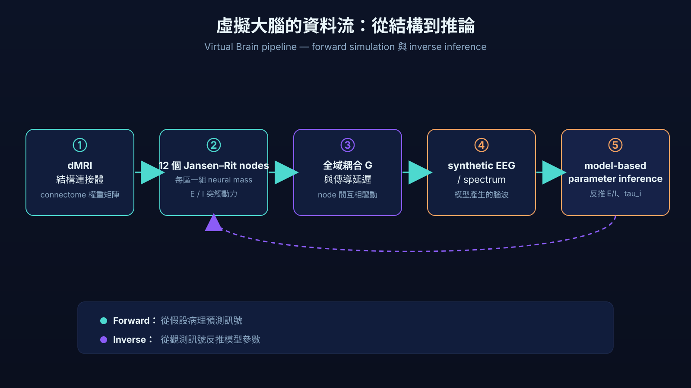
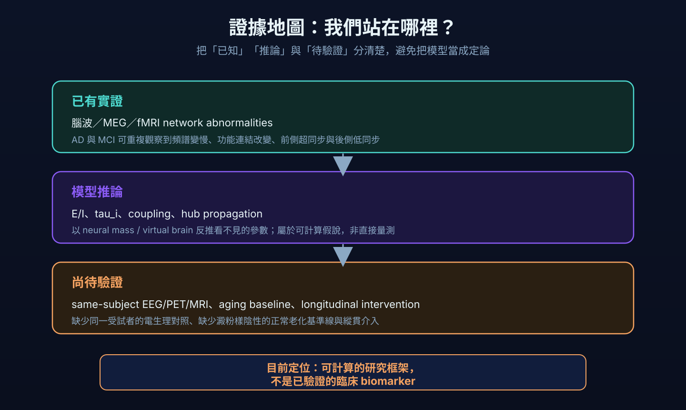

幫大腦做一台「數位分身」：我們能用腦波，看見阿茲海默症最早的失衡嗎？
從結構連接體、Jansen–Rit neural mass model 到 synthetic EEG：把看不見的 excitation–inhibition balance 變成可計算假說，也誠實標出目前仍未跨越的驗證缺口。

我們常以為阿茲海默症就是「腦細胞一個一個死掉」。這沒錯，但只說對了一半。近十年，神經科學界越來越相信：在記憶真正開始流失之前很久，大腦其實是先失去了一種平衡。
這篇文章，談的是一群科學家如何用數學模型，把看不見的「大腦煞車與油門」變成可以推算的數字——以及這條路目前走到哪、哪裡還是工地。中間會有一個你可以親手轉動的虛擬大腦儀表板。
一、大腦不是只會「壞掉」，它會先「失去平衡」
大腦的每一個神經迴路，都同時裝著「油門」和「煞車」。負責興奮（excitation）的錐體細胞是油門，負責抑制（inhibition）的中介神經元（interneuron）是煞車。健康的大腦，油門和煞車配合得天衣無縫，產生規律、和諧的腦波節奏。這種興奮與抑制之間的平衡，簡稱 E/I 平衡。
阿茲海默症的元兇之一、澱粉樣蛋白（amyloid-β，簡稱 Aβ），最毒的地方不只是讓細胞死亡，而是它可能會特別去破壞「煞車」——傷害那些快速放電的抑制性中介神經元。煞車一鬆，油門就相對失控，於是局部腦區陷入「過度興奮」（hyperexcitability）。這種微觀的失衡，會一路往上放大，變成腦波上看得到的異常（Maestú 等人，2021）。
二、什麼是「虛擬大腦」？用電纜和振盪器拼出一顆腦
想像你要重建一座城市的供電網。你需要兩樣東西：電纜的接線圖，還有每一棟建築裡的設備。虛擬大腦（virtual brain / brain network model）也是這樣拼出來的：
- 接線圖：用擴散造影（dMRI）掃出大腦白質纖維的走向，得到「哪一區連到哪一區」的結構連接體（connectome）。這是網路的「邊」。
- 每個節點的設備：在每一個腦區放一個會自己振盪的數學模組（neural mass model），用方程式描述這區神經元群體的興奮與抑制如何拉鋸。這是網路的「節點」（Lu 等人，2022）。
把這兩者組起來餵進電腦，它就會自己長出模擬的腦波或血流訊號（forward simulation）。最妙的是——你可以反過來操作：拿真實病人的腦波，去「反推」那台分身裡看不見的旋鈕轉到了哪裡，包括我們最想知道的 E/I 比例（inverse inference）。

三、親手轉動模型：Jansen–Rit 全腦模擬
下面這個儀表板，背後是一個由 Jansen–Rit 方程式實際數值積分（RK4）出來的 12-node 全腦網路。每一個 node 都包含三個族群：錐體細胞、興奮性中介神經元與抑制性中介神經元；它輸出的「腦波」是錐體細胞接收到的興奮與抑制突觸電位之差。12 個 node 再透過一個固定、對稱、稀疏的結構權重矩陣互相耦合，其中兩個是高連結度的樞紐（hub）。
你可以調整外部輸入、興奮／抑制增益、抑制時間常數 tau_i、全域耦合 G 與雜訊，並切換四種情境預設。所有波形都是當下算出來的，不是預錄動畫；固定 seed 時輸出可重現，按「重設」即回到基準狀態。
12-node Virtual Brain
EEG-like activity
四、三個比喻，看懂背後的數學
比喻一：足球場的「人浪」
（對應 Cooray 2023 的絕熱近似）人浪是怎麼形成的？微觀上每個球迷只是看旁邊的人快速站起、坐下；但從高處看，是一道緩緩繞場移動的巨大的波。要理解大腦的慢變化，你不需要追蹤每個神經元每一毫秒的動作，只要描述那道波的「能量地形」（勢能景觀）。當阿茲海默症讓某些「球迷」不配合，這片地形就會變形，人浪可能提早崩潰。
比喻二：收音機的「調幅解調」
（對應 Schirner 2018 的半波整流）老式 AM 收音機靠「整流器」把波形負半邊削掉，把人聲從高頻電波擠出來。大腦裡的抑制性神經元就扮演整流器：因為放電率不能小於零，高頻 Alpha 波（約 10 Hz）的負半邊被削掉，於是 Alpha 的強弱起伏被翻譯成 fMRI 看到的那種極慢網路活動。重點是：大腦是非線性的，必須把「放電率不能為負」寫進模型。
比喻三：城市的音響合成器
（對應 Stefanovski 2019 的全腦傳播）把大腦想成一整組相連的合成器，每區原本都奏著和諧的 10 Hz 中音。當 Aβ 在某幾個街區堆積，就像把那個模組的濾波器旋鈕（tau_i）轉慢了，那一區開始發出低沉的 4 Hz 噪音。可怕的是——如果壞掉的剛好是樞紐，它會逼著其他健康模組一起走音。研究的漂亮對照是：若把 Aβ 平均撒開（而非集中），這種變慢就不會發生——「不均勻」與「透過樞紐傳播」缺一不可。
五、這套方法目前「看到」了什麼？
四個代表性研究，各自從不同角度提供了證據：
| 研究 | 樣本 | 關鍵發現 |
|---|---|---|
| Stam 2023 MEG × Stuart-Landau |
SCD / MCI 世代 | Theta 頻段「振幅包絡相關（AEC）」最敏感，在高興奮、中等耦合時最貼近真實大腦（SCD r=0.697、MCI r=0.587）。 |
| Yokoyama 2023 睡眠 EEG × 卡爾曼濾波 |
19 位健康受試者 | 以不到一秒的解析度追蹤整夜睡眠的 E/I 變化：深睡興奮上升、REM 抑制上升，傳統方法測不到。 |
| Stefanovski 2019 Aβ 驅動虛擬腦波 |
N=33；10 AD、8 MCI、15 HC | 把 Aβ-PET 餵進虛擬大腦，重現典型「Alpha 轉 Theta」變慢（tau_i 14→50 ms），並模擬虛擬 Memantine 讓腦波「正常化」。 |
| Zimmermann 2018 反推參數 × 認知 |
N=124；73 HC、35 aMCI、16 AD | 模型反推的內部參數比單純連接矩陣更能預測認知分數；邊緣系統「過度興奮」與認知衰退負相關，「局部抑制」反而是保護因子。 |
把這些拼起來，故事很迷人：分子病變 → 煞車失靈 → 局部過度興奮 → 腦波變慢 → 認知衰退，而且每一步都能用數學接起來、甚至能在電腦裡試藥。
六、請務必把這些「但是」聽完
真正負責任的科學，重點往往在「但是」之後。這套方法目前有幾個還沒解決的硬傷，誠實列出來：
- E/I 從頭到尾沒有被「量」過，只是被「猜」出來的。所有「過度興奮」都是模型擬合出來的最佳參數，沒有任何一個 AD 世代用電極、磁振波譜或穿顱磁刺激去直接驗證。這帶有一點循環論證：模型假設有一個 E/I 軸 → 用它去擬合腦波 → 然後宣布 E/I 能解釋腦波。
- 數學最可靠的地方，剛好不是疾病最嚴重的地方。Deschle 2021 明白指出，這類均場模型只有在某個臨界帶（validity band，lambda 約 0.70–0.85）附近才準；而 AD 最典型的「前側超同步、後側低同步」恰恰落在這個可信區間之外。我們的尺，在最該量的地方最不準。
- 虛擬腦波，從沒跟「同一個人的真實腦波」對照過。最關鍵的模擬研究（Stefanovski 2019）當年並沒有同步收錄這些病人的真實腦電圖。缺少 same-subject 的電生理對照，「模擬出變慢」其實只是模型的內部自洽，不是驗證。
- 「正常老化」幾乎沒有被認真建模。沒有任何研究真的招募「澱粉樣蛋白陰性的健康老人」當基準線。沒有這條老化基準線，所謂「AD 特有的失衡」就可能混入了單純老化的雜訊。
- 一個容易被忽略的數學陷阱。模型用「把抑制時間常數 tau_i 拉長」代表「煞車失靈」。但拉長 tau_i 會讓抑制訊號的總面積變大——數學上反而是抑制增加，跟「去抑制」的故事方向相反。換句話說，tau_i 延長不等同抑制總量減少；「比較慢」不等於「比較少」。
此外：確診 AD 的樣本數偏小、缺乏縱貫追蹤、程式碼與資料多半未公開、不同研究的世代與儀器各異而無法互相複製。

七、不是臨床工具，而是一張施工藍圖
把上面的批評讀完，你該得到的結論不是「這套方法沒用」，而是——它現在是一個非常有價值的理論框架與研究路線圖，不是已驗證的臨床 biomarker。
它把分子、腦波、認知第一次用一套可以計算、可以反推、甚至可以模擬投藥的數學語言串了起來。它真正缺的，是接下來這幾件事：
- 在同一群病人身上同時收 PET、磁振造影與真實腦波，讓模型對照他們自己的 same-subject 訊號；
- 老老實實建立一條健康老化的 E/I 基準線；
- 把不同方法（Stam 的 a、Yokoyama 的 mE/I、Zimmermann 的耦合參數）拿來跨模型互相驗證，而不是各說各話；
- 做縱貫追蹤與介入，把「相關」變成「因果」。
科學最迷人的地方，從來不是給你一個漂亮的答案，而是清楚告訴你：我們現在站在哪裡，下一塊磚該往哪裡砌。用數位分身解碼大腦的煞車與油門，這條路才剛鋪到一半——但方向，已經看得很清楚了。
Take-home Messages
- 阿茲海默症在記憶流失之前，很可能先出現 E/I 失衡與局部過度興奮。
- 虛擬大腦把看不見的 E/I 變成可計算的假說，並能在電腦裡模擬病程與投藥。
- 本文的儀表板呈現的是模型內部一致性，不是生理效度；它是研究示範、非診斷工具。
- 最大的缺口是 same-subject 電生理驗證、正常老化基準線與縱貫研究；在補上之前，它不是已驗證的臨床 biomarker。
參考資料
- Clusella P, Köksal-Ersöz E, Garcia-Ojalvo J, Ruffini G. Comparison between an exact and a heuristic neural mass model with second-order synapses. Biological Cybernetics. 2022;117(1–2):5–19. doi:10.1007/s00422-022-00952-7
- Cooray GK, Rosch RE, Friston KJ. Global dynamics of neural mass models. PLOS Computational Biology. 2023;19(2):e1010915. doi:10.1371/journal.pcbi.1010915
- Deschle N, Ignacio Gossn J, Tewarie P, Schelter B, Daffertshofer A. On the validity of neural mass models. Frontiers in Computational Neuroscience. 2021;14:581040. doi:10.3389/fncom.2020.581040
- Lu M, Guo Z, Gao Z, Cao Y, Fu J. Multiscale brain network models and their applications in neuropsychiatric diseases. Electronics. 2022;11(21):3468. doi:10.3390/electronics11213468
- Maestú F, de Haan W, Busche MA, DeFelipe J. Neuronal excitation/inhibition imbalance: Core element of a translational perspective on Alzheimer pathophysiology. Ageing Research Reviews. 2021;69:101372. doi:10.1016/j.arr.2021.101372
- Schirner M, McIntosh AR, Jirsa V, Deco G, Ritter P. Inferring multi-scale neural mechanisms with brain network modelling. eLife. 2018;7:e28927. doi:10.7554/eLife.28927
- Stam CJ, van Nifterick AM, de Haan W, Gouw AA. Network hyperexcitability in early Alzheimer's disease: Is functional connectivity a potential biomarker? Brain Topography. 2023;36:595–612. doi:10.1007/s10548-023-00968-7
- Stefanovski L, Triebkorn P, Spiegler A, et al. Linking molecular pathways and large-scale computational modeling to assess candidate disease mechanisms and pharmacodynamics in Alzheimer's disease. Frontiers in Computational Neuroscience. 2019;13:54. doi:10.3389/fncom.2019.00054
- Stefanovski L, Meier JM, Pai RK, et al. Bridging scales in Alzheimer's disease: Biological framework for brain simulation with The Virtual Brain. Frontiers in Neuroinformatics. 2021;15:630172. doi:10.3389/fninf.2021.630172
- Yokoyama H, Kitajo K. A data assimilation method to track excitation–inhibition balance change using scalp EEG. Communications Engineering. 2023;2:92. doi:10.1038/s44172-023-00143-7
- Zimmermann J, Perry A, Breakspear M, et al. Differentiation of Alzheimer's disease based on local and global parameters in personalized Virtual Brain models. NeuroImage: Clinical. 2018;19:240–251. doi:10.1016/j.nicl.2018.04.017